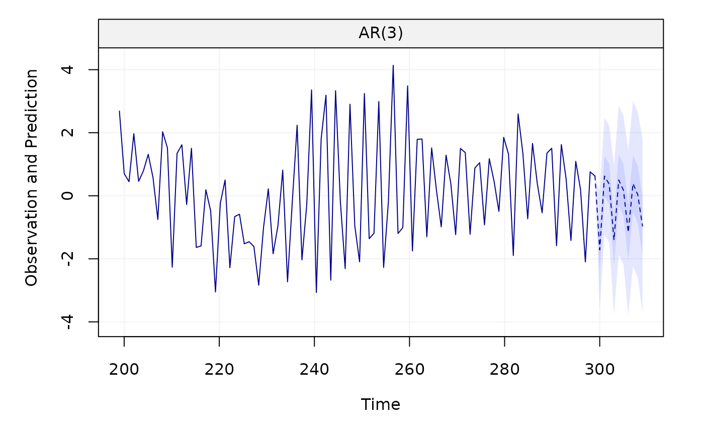

This function plots the time series forecast.
# S3 method for fitsimts predict(object, n.ahead = 10, show_last = 100, level = NULL, xlab = NULL, ylab = NULL, main = NULL, ...)
Arguments
| object | A |
|---|---|
| n.ahead | An |
| show_last | A |
| level | A |
| xlab | A |
| ylab | A |
| main | A |
| ... | Additional arguments. |
Examples
#> $pred #> Time Series: #> Start = 301 #> End = 310 #> Frequency = 1 #> [1] -1.7154762 0.6247164 0.3660653 -1.4065982 0.5010924 0.1730198 #> [7] -1.1585547 0.3888403 0.0324295 -0.9603074 #> #> $se #> Time Series: #> Start = 301 #> End = 310 #> Frequency = 1 #> [1] 0.9488929 0.9499413 0.9501834 1.2043121 1.2063009 1.2068119 1.3369845 #> [8] 1.3394043 1.3400935 1.4124346 #> #> $CI0.5 #> [,1] [,2] #> [1,] -2.35549475 -1.07545774 #> [2,] -0.01600927 1.26544211 #> [3,] -0.27482370 1.00695429 #> [4,] -2.21889441 -0.59430207 #> [5,] -0.31254517 1.31473005 #> [6,] -0.64096251 0.98700201 #> [7,] -2.06033702 -0.25677237 #> [8,] -0.51457417 1.29225482 #> [9,] -0.87144983 0.93630883 #> [10,] -1.91298013 -0.00763474 #> #> $CI0.95 #> [,1] [,2] #> [1,] -3.575272 0.1443196 #> [2,] -1.237134 2.4865672 #> [3,] -1.496260 2.2283906 #> [4,] -3.767007 0.9538101 #> [5,] -1.863214 2.8653988 #> [6,] -2.192288 2.5383276 #> [7,] -3.778996 1.4618867 #> [8,] -2.236344 3.0140246 #> [9,] -2.594105 2.6589645 #> [10,] -3.728628 1.8080136 #>predict(model, level = 0.95)#> $pred #> Time Series: #> Start = 301 #> End = 310 #> Frequency = 1 #> [1] -1.7154762 0.6247164 0.3660653 -1.4065982 0.5010924 0.1730198 #> [7] -1.1585547 0.3888403 0.0324295 -0.9603074 #> #> $se #> Time Series: #> Start = 301 #> End = 310 #> Frequency = 1 #> [1] 0.9488929 0.9499413 0.9501834 1.2043121 1.2063009 1.2068119 1.3369845 #> [8] 1.3394043 1.3400935 1.4124346 #> #> $CI0.95 #> [,1] [,2] #> [1,] -3.575272 0.1443196 #> [2,] -1.237134 2.4865672 #> [3,] -1.496260 2.2283906 #> [4,] -3.767007 0.9538101 #> [5,] -1.863214 2.8653988 #> [6,] -2.192288 2.5383276 #> [7,] -3.778996 1.4618867 #> [8,] -2.236344 3.0140246 #> [9,] -2.594105 2.6589645 #> [10,] -3.728628 1.8080136 #>x = gts(as.vector(lynx), start = 1821, end = 1934, freq = 1, unit_ts = bquote(paste(10^8," ",m^3)), name_ts = "Numbers", unit_time = "year", data_name = "Annual Numbers of Lynx Trappings") model = estimate(AR(1), x) predict(model, n.ahead = 20)#> $pred #> Time Series: #> Start = 115 #> End = 134 #> Frequency = 1 #> [1] 2874.298 2500.078 2231.648 2039.102 1900.987 1801.917 1730.853 1679.879 #> [9] 1643.315 1617.087 1598.274 1584.779 1575.099 1568.156 1563.175 1559.603 #> [17] 1557.040 1555.202 1553.883 1552.938 #> #> $se #> Time Series: #> Start = 115 #> End = 134 #> Frequency = 1 #> [1] 1100.247 1354.031 1467.609 1522.751 1550.359 1564.374 1571.536 1575.209 #> [9] 1577.095 1578.065 1578.564 1578.820 1578.952 1579.020 1579.055 1579.073 #> [17] 1579.082 1579.087 1579.089 1579.091 #> #> $CI0.5 #> [,1] [,2] #> [1,] 2132.1925 3616.403 #> [2,] 1586.7978 3413.357 #> [3,] 1241.7606 3221.535 #> [4,] 1012.0219 3066.181 #> [5,] 855.2862 2946.688 #> [6,] 746.7629 2857.071 #> [7,] 670.8683 2790.838 #> [8,] 617.4169 2742.341 #> [9,] 579.5804 2707.050 #> [10,] 552.6988 2681.476 #> [11,] 533.5492 2662.999 #> [12,] 519.8813 2649.677 #> [13,] 510.1124 2640.086 #> [14,] 503.1232 2633.189 #> [15,] 498.1190 2628.232 #> [16,] 494.5343 2624.671 #> [17,] 491.9654 2622.115 #> [18,] 490.1240 2620.280 #> [19,] 488.8038 2618.963 #> [20,] 487.8572 2618.018 #> #> $CI0.95 #> [,1] [,2] #> [1,] 717.8539 5030.741 #> [2,] -153.7738 5153.929 #> [3,] -644.8127 5108.108 #> [4,] -945.4348 5023.638 #> [5,] -1137.6598 4939.634 #> [6,] -1264.1993 4868.033 #> [7,] -1349.3011 4811.008 #> [8,] -1407.4736 4767.232 #> [9,] -1447.7348 4734.365 #> [10,] -1475.8630 4710.038 #> [11,] -1495.6536 4692.202 #> [12,] -1509.6513 4679.210 #> [13,] -1519.5898 4669.789 #> [14,] -1526.6664 4662.978 #> [15,] -1531.7154 4658.066 #> [16,] -1535.3232 4654.529 #> [17,] -1537.9040 4651.984 #> [18,] -1539.7515 4650.155 #> [19,] -1541.0749 4648.842 #> [20,] -1542.0231 4647.898 #>predict(model, n.ahead = 20, level = 0.95)#> $pred #> Time Series: #> Start = 115 #> End = 134 #> Frequency = 1 #> [1] 2874.298 2500.078 2231.648 2039.102 1900.987 1801.917 1730.853 1679.879 #> [9] 1643.315 1617.087 1598.274 1584.779 1575.099 1568.156 1563.175 1559.603 #> [17] 1557.040 1555.202 1553.883 1552.938 #> #> $se #> Time Series: #> Start = 115 #> End = 134 #> Frequency = 1 #> [1] 1100.247 1354.031 1467.609 1522.751 1550.359 1564.374 1571.536 1575.209 #> [9] 1577.095 1578.065 1578.564 1578.820 1578.952 1579.020 1579.055 1579.073 #> [17] 1579.082 1579.087 1579.089 1579.091 #> #> $CI0.95 #> [,1] [,2] #> [1,] 717.8539 5030.741 #> [2,] -153.7738 5153.929 #> [3,] -644.8127 5108.108 #> [4,] -945.4348 5023.638 #> [5,] -1137.6598 4939.634 #> [6,] -1264.1993 4868.033 #> [7,] -1349.3011 4811.008 #> [8,] -1407.4736 4767.232 #> [9,] -1447.7348 4734.365 #> [10,] -1475.8630 4710.038 #> [11,] -1495.6536 4692.202 #> [12,] -1509.6513 4679.210 #> [13,] -1519.5898 4669.789 #> [14,] -1526.6664 4662.978 #> [15,] -1531.7154 4658.066 #> [16,] -1535.3232 4654.529 #> [17,] -1537.9040 4651.984 #> [18,] -1539.7515 4650.155 #> [19,] -1541.0749 4648.842 #> [20,] -1542.0231 4647.898 #>predict(model, n.ahead = 20, level = c(0.50, 0.80, 0.95))#> $pred #> Time Series: #> Start = 115 #> End = 134 #> Frequency = 1 #> [1] 2874.298 2500.078 2231.648 2039.102 1900.987 1801.917 1730.853 1679.879 #> [9] 1643.315 1617.087 1598.274 1584.779 1575.099 1568.156 1563.175 1559.603 #> [17] 1557.040 1555.202 1553.883 1552.938 #> #> $se #> Time Series: #> Start = 115 #> End = 134 #> Frequency = 1 #> [1] 1100.247 1354.031 1467.609 1522.751 1550.359 1564.374 1571.536 1575.209 #> [9] 1577.095 1578.065 1578.564 1578.820 1578.952 1579.020 1579.055 1579.073 #> [17] 1579.082 1579.087 1579.089 1579.091 #> #> $CI0.5 #> [,1] [,2] #> [1,] 2132.1925 3616.403 #> [2,] 1586.7978 3413.357 #> [3,] 1241.7606 3221.535 #> [4,] 1012.0219 3066.181 #> [5,] 855.2862 2946.688 #> [6,] 746.7629 2857.071 #> [7,] 670.8683 2790.838 #> [8,] 617.4169 2742.341 #> [9,] 579.5804 2707.050 #> [10,] 552.6988 2681.476 #> [11,] 533.5492 2662.999 #> [12,] 519.8813 2649.677 #> [13,] 510.1124 2640.086 #> [14,] 503.1232 2633.189 #> [15,] 498.1190 2628.232 #> [16,] 494.5343 2624.671 #> [17,] 491.9654 2622.115 #> [18,] 490.1240 2620.280 #> [19,] 488.8038 2618.963 #> [20,] 487.8572 2618.018 #> #> $CI0.8 #> [,1] [,2] #> [1,] 1464.27481 4284.320 #> [2,] 764.81744 4235.338 #> [3,] 350.83133 4112.464 #> [4,] 87.61810 3990.585 #> [5,] -85.87732 3887.852 #> [6,] -202.90871 3806.743 #> [7,] -283.15139 3744.858 #> [8,] -338.83230 3698.591 #> [9,] -377.81384 3664.444 #> [10,] -405.28417 3639.459 #> [11,] -424.73649 3621.285 #> [12,] -438.56007 3608.119 #> [13,] -448.40911 3598.608 #> [14,] -455.43958 3591.752 #> [15,] -460.46492 3586.816 #> [16,] -464.06055 3583.266 #> [17,] -466.63504 3580.715 #> [18,] -468.47933 3578.883 #> [19,] -469.80101 3577.568 #> [20,] -470.74843 3576.624 #> #> $CI0.95 #> [,1] [,2] #> [1,] 717.8539 5030.741 #> [2,] -153.7738 5153.929 #> [3,] -644.8127 5108.108 #> [4,] -945.4348 5023.638 #> [5,] -1137.6598 4939.634 #> [6,] -1264.1993 4868.033 #> [7,] -1349.3011 4811.008 #> [8,] -1407.4736 4767.232 #> [9,] -1447.7348 4734.365 #> [10,] -1475.8630 4710.038 #> [11,] -1495.6536 4692.202 #> [12,] -1509.6513 4679.210 #> [13,] -1519.5898 4669.789 #> [14,] -1526.6664 4662.978 #> [15,] -1531.7154 4658.066 #> [16,] -1535.3232 4654.529 #> [17,] -1537.9040 4651.984 #> [18,] -1539.7515 4650.155 #> [19,] -1541.0749 4648.842 #> [20,] -1542.0231 4647.898 #>